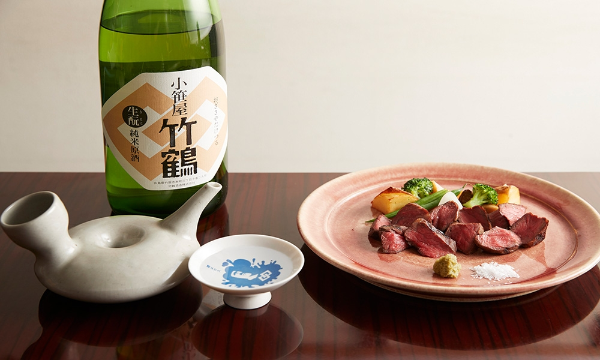
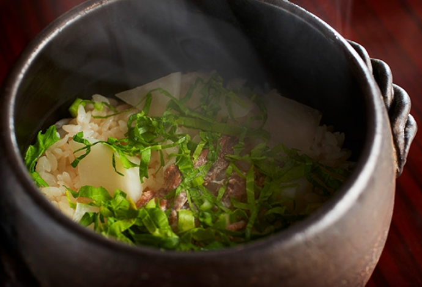
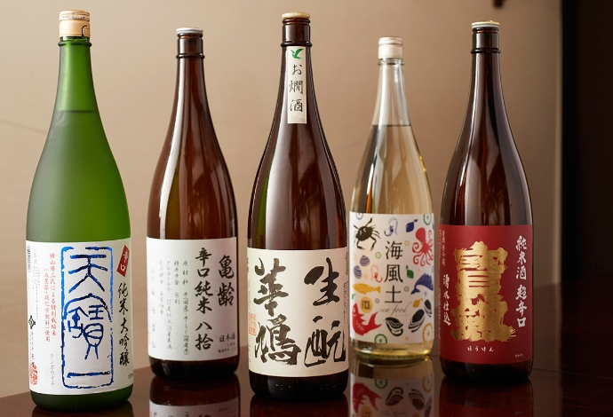

お料理
四季を感じさせる
33kitchenの逸品
日本酒やお料理に使う食材は、当店のコンセプトにもあるように、瀬戸内近郊のものを揃えております。
生産者さんが丹精込めて作る上質なお野菜や「広島牛」のステーキ、宮島産牡蠣のオイル漬けなど食材の素晴らしさを活かすために手間を惜しまず丁寧に調理しております。


瀬戸内の日本酒
当店こだわりの、瀬戸内の日本酒。
瀬戸内の蔵元さんと密な関係を築いている広島の酒屋さんから直接仕入れており、東京都内では出会えないような銘柄を、多数ご用意しております。
日本酒初心者の方や苦手意識がある方も、一度当店で試してみてください。
きっと新しい美味しさに出会えるはずです。